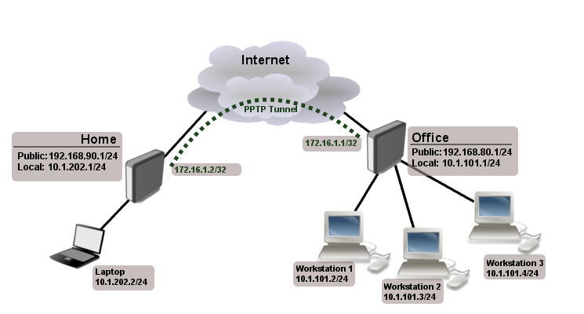

¿Qué son las VPN en MikroTik?
Las VPN (Virtual Private Network) en MikroTik son una solución de red segura que permite la interconexión de redes locales a través de una conexión pública, como Internet. Una VPN en MikroTik establece un túnel cifrado entre dos puntos, permitiendo que los datos se transmitan de forma segura y privada.
Las VPN en MikroTik ofrecen una serie de beneficios, como el acceso remoto a la red local, la interconexión de sucursales y la protección de la información sensible frente a amenazas externas.
Tipos de VPN en MikroTik
MikroTik ofrece varios tipos de VPN que se pueden utilizar según las necesidades específicas de cada entorno:
- PPTP (Point-to-Point Tunneling Protocol)
- L2TP/IPSec (Layer 2 Tunneling Protocol with IP Security)
- OpenVPN
Creación de una VPN en MikroTik
Paso 1: Acceder a la interfaz de administración
Conecta tu equipo MikroTik a través de un cable de red al puerto Ethernet de tu computadora. Luego, abre un navegador web e ingresa la dirección IP predeterminada del enrutador MikroTik en la barra de direcciones.
Paso 2: Configurar la interfaz WAN
Accede a la interfaz de administración y configura la interfaz WAN para establecer la conexión a Internet. Asegúrate de proporcionar la dirección IP y la configuración DNS adecuadas.
Paso 3: Configurar la interfaz LAN
Configura la interfaz LAN para proporcionar conectividad a la red local. Asigna una dirección IP y configura la máscara de subred correspondiente.

Paso 4: Configurar el tipo de VPN
Selecciona el tipo de VPN que deseas configurar en MikroTik, como PPTP, L2TP o OpenVPN. Cada tipo tiene sus propias consideraciones de seguridad.
Paso 5: Configurar los parámetros de la VPN
Establece los parámetros específicos de la VPN, como nombre de usuario, contraseña y dirección IP del servidor VPN.
Paso 6: Configurar las reglas de firewall
Agrega reglas de firewall para permitir el tráfico de la VPN a través del enrutador MikroTik. Esto garantizará que los paquetes VPN sean correctamente enrutados.
Paso 7: Prueba la conexión VPN
Desde un cliente externo, intenta conectarte a la VPN utilizando los parámetros de conexión proporcionados. Verifica si puedes establecer una conexión exitosa.